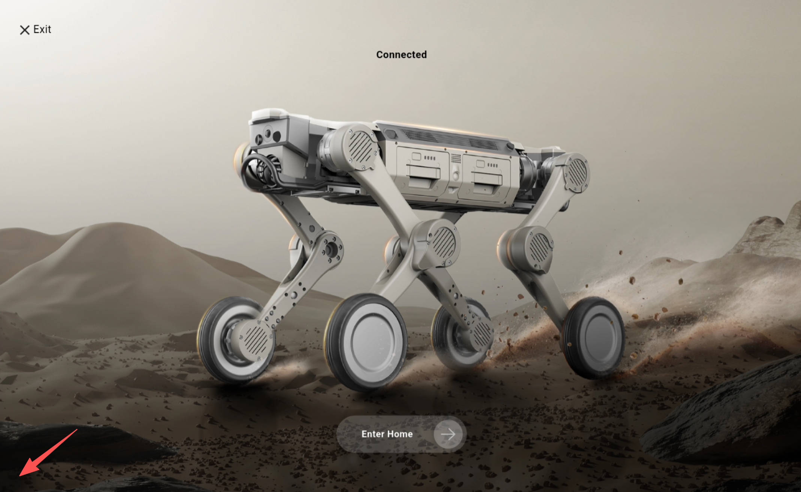
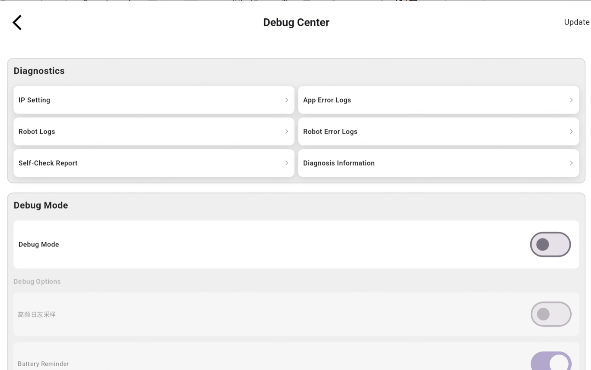
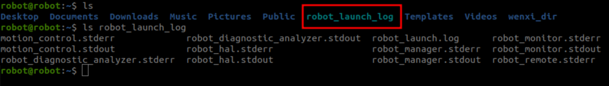

5.4 Log Viewing
Viewing Remote Controller Error Messages
Continuously click the bottom-left corner of the homepage

Open the Settings Center to view the device exception logs

Viewing Device Logs
Log path for the most recent device startup (RK & NX):/home/robot/robot_launch_log
Log path for the most recent 6 device startups (RK & NX):/userdata/log/
Log path for autonomous docking & recharging (NX):/tmp/log/alg_data
scp -r robot@192.168.234.1:/userdata/log. # Pull logs from the most recent 6 device startups
scp -r robot@192.168.234.1:/home/robot/robot_launch_log . # Pull logs from the current device startup
